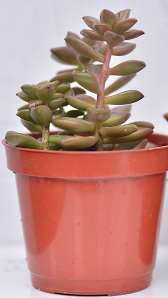

多肉植物相談所
succulent plants

- 多肉養護
- 1.適當的照明：
- 多肉植物喜歡明亮的光線，可以放在室內靠近窗戶的位置，或者在室外陰涼處。避免直接暴露在強烈陽光下，尤其是在夏季的炎熱時段。
- 2.適量的澆水：
- 通常情況下，多肉植物不需要太多水。每次澆水時讓土壤完全乾燥後再次澆水。冬季應該更少澆水，因為植物生長速度較慢。
- 3.良好的排水系統：
- 使用能夠排水的容器和土壤混合物，以防止多肉植物根部過度濕潤而腐爛。
- 4.適當的溫度：
- 多肉植物通常適應於溫暖的環境，但也能忍受較冷的溫度，只要不低於攝氏5度。在寒冷季節，應該避免暴露在極寒的環境中。
- 5.定期施肥：
- 在生長季節（春天到夏天）定期給予多肉植物適量的肥料，例如專用的多肉植物肥料或者稀釋過的普通室內植物肥料。冬季則不需要施肥。
- 6.定期檢查和維護：
- 檢查多肉植物是否有害蟲或病害的跡象，及時處理。定期檢查植物的健康狀況，必要時更換土壤或重新植入。
-
總結來說，
多肉植物的養護相對簡單，主要是確保它們獲得適當的光線、水分和溫度，並且適時進行基本的維護。通過這些基本的方法，可以确保您的多肉植物能夠健康茁壯地生長。
- 照顧方法1 - 悶養
-
悶養是什麼?
悶養是指在植株澆水後，用專用的悶養蓋或是用任何透明的罩子將植株整盆罩住，留下少量的透氣孔，並在加蓋前噴灑部分水分在蓋子上，讓罩子內的空氣濕度提高到接近100%，空氣濕度的提高能讓植物減緩水分從蒸散作用中散失。
悶養對多肉好嗎？
什麼樣的多肉適合悶養?
這個問題其實不是那麼好回答，需要評估種植環境、澆水頻率、多肉品種等等因素；適合悶養的多肉品種之一首推玉露，玉露經過悶養提高空氣濕度，可讓玉露的窗邊更透更亮，不過悶養還是有可能引發許多潛在的問題！
接下來我們一一列出可能會發生的狀況希望你們能種出更美的植株，而且悶養確實能讓植物在短時間變成好看的狀態。 - 悶養會有什麼隱藏的風險呢？
-
染菌
高濕度會讓大部分的細菌有更高的活力與繁殖力，再加上悶養時會讓通風度降低，容易發生染菌的問題。 -
徒長
植株的徒長除了和陽光有關外，也和環境通風度與濕度有關，高濕度環境如果沒有搭配較高強度的陽光，就容易發生徒長，更不用說悶養時的空氣濕度接近100%了。 -
什麼樣的多肉不適合悶養？
△植物有葉傷尚未痊癒
△發生徒長不久/徒長太過嚴重的植物
△植物狀態乾扁太久
△夏天的任何狀態
多肉植物是一種特別適合初學者的植物，因為它們相對容易照料並能在室內或室外環境中生存。以下是一些多肉植物的基本養護方法：
| 晶瑩剔透的玉露 | |
|---|---|
.jpg) |
|
| 經過悶養的玉露，更加透亮、飽滿。 |
| 正常的姬朧月 | 徒長的姬朧月 |
|---|---|
 |
 |
| 葉片緊密，呈現好看的花形。 | 葉片間距拉大，像棵小樹。 |
客服資訊
服務時間：周一至周五 10:00~17:00
信箱：succ@gma!l.com
電話：04-8888-6666
地址：台中市西曬區台灣小道切八段1號102樓
LearnForFun Co.,Ltd.版權沒有@